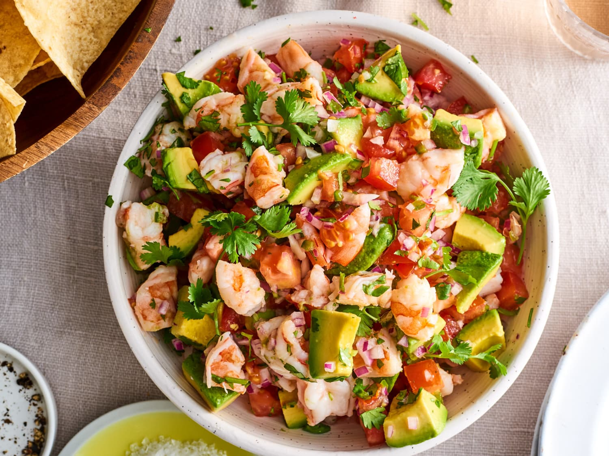

Ceviche

Description
Ceviche is a Latin American dish that typically consists of raw fish or seafood that is marinated in citrus juices (usually lime or lemon) and seasoned with spices like chili peppers, onions, and cilantro. The acid from the citrus juice "cooks" the fish, resulting in a texture that is firm yet tender. Ceviche is often served cold and may be accompanied by avocado, corn, and/or plantain chips. It is a refreshing and flavorful dish that is popular throughout Latin America, particularly in coastal regions. There are many variations of ceviche, with different types of seafood and seasonings used depending on the region and personal preference.
Ingredients
- 1 lb fresh, skinless white fish (such as sea bass, snapper, or halibut), cut into small pieces
- 1 lb fresh, skinless white fish (such as sea bass, snapper, or halibut), cut into small pieces
- 1/2 cup freshly squeezed lemon juice (about 2-3 lemons)
- 1/2 cup freshly squeezed lemon juice (about 2-3 lemons)
- 1-2 jalapeño peppers, seeded and minced
- 1/2 cup chopped fresh cilantro leaves
- 2 tbsp olive oil
- 1 tsp salt
- 1/4 tsp black pepper
- 1-2 ripe avocados, diced (optional)
- Corn or plantain chips, for serving
Steps
- In a large mixing bowl, combine the fish, lime juice, and lemon juice. Stir well to ensure that all the fish is coated with the juices. Cover and refrigerate for 20-30 minutes.
- Drain off the excess juice from the fish and discard.
- Add the red onion, jalapeño peppers, cilantro leaves, olive oil, salt, and black pepper to the fish. Stir well to combine.
- Cover and refrigerate for at least 30 minutes (or up to 2 hours) to allow the flavors to meld together.
- Before serving, add the diced avocado (if using) and stir gently.
- Serve the ceviche chilled with corn or plantain chips on the side.